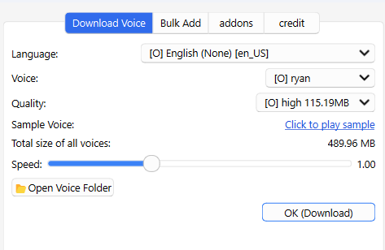

Piper TTS for Anki
ü§ñPiperTTS for Anki - Fast local AI neural text to speech (Create by Shige‡∂û)
This is an add-on to generate voice from text and add it to Anki cards, using local AI Text to Speech Piper. After downloading an AI voice from the options, you can quickly generate an AI voice locally from the selected text or notes. Currently about 25 languages are supported.

How to use
Select a language and a voice from the options of the add-on, and download the voice file. (A single voice is about 60MB-100MB) You can play the voice from the menu by selecting the text in the reviewer and right-clicking, or you can save the voice to a field on the selected card. If you select multiple notes in the browser you can bulk add audio from the field.
- Select text in reviewer and save or read out loud
- Select notes in browser and add audio in bulk
- Options to add new language and settings to add in bulk
Audio saving format (FFmpeg)
The default audio file format saved is Wav. To save as mp3 you will need FFmpeg. If you already have FFmpeg installed on your laptop, the audio will be automatically converted to mp3. (Wav is large in size, while Mp3 is relatively small because it is compressed.)
-
Or, see the “Watch Foreign Language Movies with Anki” add-on page of the popular add-on for clear instructions on how to download FFmeg. add-on:
Note
- Not sure if it works on MacOS. (it has not been tested yet)
- Each voice file is about 60MB - 100MB in size.
- Some languages are not supported. (e.g. Japanese. Still under development by the developers of Piper).
- So far no TTS other than Piper has been incorporated. (the popular add-ons HypertTTS and AwsomeTTS support most types of TTS, so I think there is not much need to develop them.)
What are the advantages of Piper?
- Piper is an open source project so it is free to use AI natural speech locally.
- Most of Piper's voices are Creative Commons licensed so you are free to redistribute and use the voices generated (e.g. commercial use or distribution of Windows or Siri TTS may be prohibited). But some may not be, check the sample audio page for the exact license if you need it: Sample audio
üö®Report
If you have any problems or requests feel free to send them to me.
- üë©‚ÄçüöÄReddit : You can request me to repair broken Add-ons.
- üåüAnkiForums : You can request me to repair broken Add-ons, and it is ideal for open discussions.
- üêôGithub : Makes it easier to track problems.
- üíñPatreon DM : Response will be prioritized.
üíñPlease Support Shige's Anki add-ons development!
Hi thank you for using this add-on, I'm Shigeඞ! I'm looking for supporters for my add-ons development, because I like Anki! So far I fixed and customized 60+ discontinued add-ons and created 30+ new add-ons. If you support my volunteer development you will get 14 add-ons for patrons only and 15 game themes included in AnkiArcade ($5/month). If you have any ideas or requests feel free to send them to me, thanks! :D

Get Patrons only addons | Patrons Q and A | Contact
[ Special Thanks ]
So far I received donations from 409 patrons and without their support I never could develop this, thank you very much!üôè
Patrons:  Arthur Bookstein
Arthur Bookstein  Haruka
Haruka  Luis Alberto, Letona Quispe
Luis Alberto, Letona Quispe  07951350313540
07951350313540  Lily
Lily  Tim
Tim  Daniel Kohl-Fink
Daniel Kohl-Fink  Kyle Mondlak
Kyle Mondlak  NamelessGO
NamelessGO  Ernest Chan
Ernest Chan  ElAnki
ElAnki  GP O'Byrne
GP O'Byrne  KM
KM  Jesse Asiedu
Jesse Asiedu  Tobias Klös
Tobias Klös  Jonathan Contreras
Jonathan Contreras  Abhi S
Abhi S  Matthew Hartford
Matthew Hartford  tarek
tarek  Jake Stucki
Jake Stucki  Isabel Guan
Isabel Guan  Peasant of Anki
Peasant of Anki  findus161
findus161  ellie
ellie  Patrick ellis
Patrick ellis  K
K  Juan Salgado
Juan Salgado  Keeler Kime
Keeler Kime  Kurt Grabow
Kurt Grabow  iuventius
iuventius  Fahim Shaik
Fahim Shaik  Augusto Stein
Augusto Stein  Ashok Rajpurohit
Ashok Rajpurohit  mootcourt
mootcourt  NoirHassassin
NoirHassassin  Morgan Torres
Morgan Torres  Tae Lee
Tae Lee  Gabriel Vinicio Guedes
Gabriel Vinicio Guedes  sab hoque
sab hoque  Ythalo Vlogs
Ythalo Vlogs  Matheus Chagas
Matheus Chagas  Yaeerrrrrr
Yaeerrrrrr  Ketan Pal
Ketan Pal  Svel1989
Svel1989  Christopher Lam
Christopher Lam  Aurora Dzurko
Aurora Dzurko  qiting zeng
qiting zeng  Tyler Schulte
Tyler Schulte  Elisabeth Barber
Elisabeth Barber  Douglas Beeman
Douglas Beeman  Steven Banner
Steven Banner  Temi Jide
Temi Jide  Ansel Ng
Ansel Ng  David C
David C  Lis Y.
Lis Y.  Haley Schwarz
Haley Schwarz  pie_is_good
pie_is_good  Kolorophyll
Kolorophyll  Jeanna
Jeanna  J P
J P  Kaitlyn Bowler
Kaitlyn Bowler  K
K  Cole Krueger
Cole Krueger  Wei
Wei  Sean Voiers
Sean Voiers  Robert Malone
Robert Malone  Mac
Mac  Jk
Jk  Andrew Yang
Andrew Yang  Heidi
Heidi  Leonora Lomoki Akporyoe
Leonora Lomoki Akporyoe  Gabriel Farrugia
Gabriel Farrugia  Aayush Bhatawadekar
Aayush Bhatawadekar  Stellate ggl
Stellate ggl  Tina Weingarten
Tina Weingarten  Bryn Price
Bryn Price  Xiuxuan Wang
Xiuxuan Wang  Azfar Hussain
Azfar Hussain  Victor Evangelista
Victor Evangelista  Adrine
Adrine  Oleksandr Pashchenko
Oleksandr Pashchenko  Woody
Woody  Ujwal Chadha
Ujwal Chadha  Osasere Osula
Osasere Osula  Kylie
Kylie  Iggi
Iggi  Alex D
Alex D  Austin Regal
Austin Regal  Aaron Buckley
Aaron Buckley  oiuhroiehg
oiuhroiehg  Sebastian Bellotti
Sebastian Bellotti  gus forester
gus forester  CunningPotato
CunningPotato  Alex Kaiser
Alex Kaiser  Alba Grecia Su√°rez Recuay
Alba Grecia Su√°rez Recuay  Mia
Mia  Jordan Brown
Jordan Brown  Izz Aryan
Izz Aryan  Hoang Hung
Hoang Hung  龍星 武田
龍星 武田  Lincoln Jacobs ...full list
Lincoln Jacobs ...full list